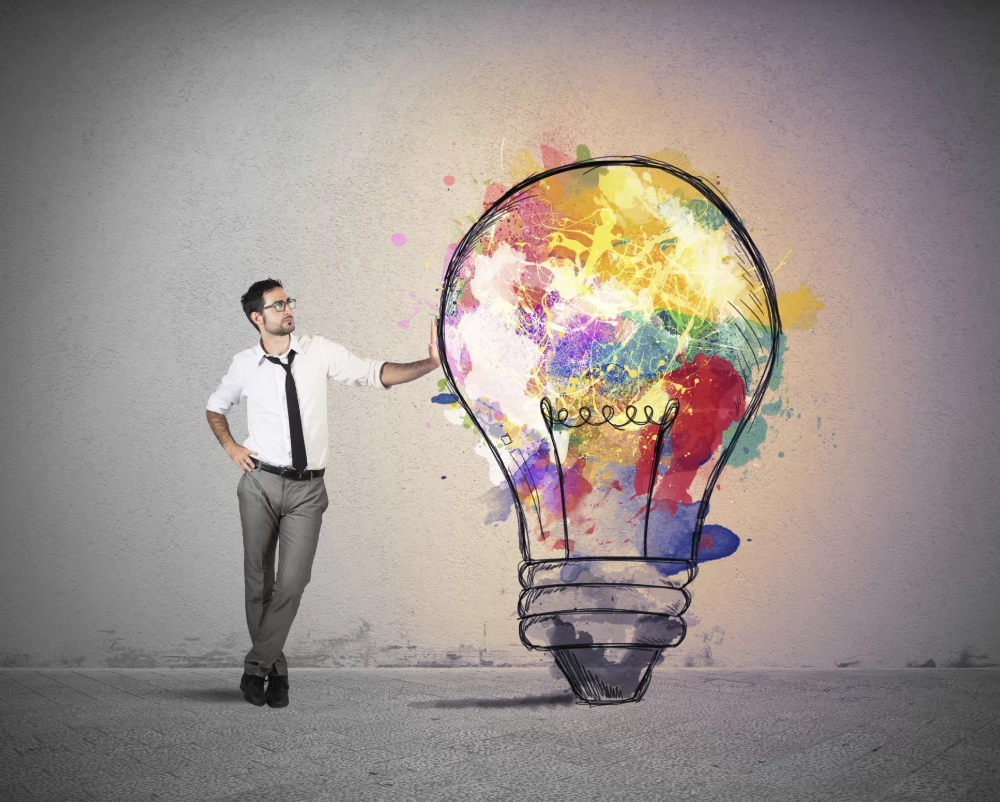

Onde se envolve
O Design Multimédia é um campo transversal que se "infiltra" em quase todos os setores modernos, pois onde quer que haja uma ecrã ou interação digital, há trabalho para um designer multimédia. Aqui estão os principais domínios de envolvimento detalhados:
1. Entretenimento e Indústrias Criativas
Videojogos: Criação de personagens, cenários, interfaces de jogo (HUD) e animações.
Cinema e TV: Produção de efeitos visuais (VFX), genéricos animados (motion graphics) e pós-produção de vídeo.
Arte Digital: Instalações interativas em museus ou eventos que respondem ao movimento ou toque do público.
2. Marketing, Publicidade e E-commerce
Branding Dinâmico: Criação de logótipos animados e identidades visuais que funcionam em múltiplos formatos digitais.
Social Media: Desenvolvimento de conteúdos rápidos e apelativos (Reels, TikToks, anúncios interativos) para captar a atenção em segundos.
Demonstrações de Produto: Uso de modelos 3D interativos e vídeos explicativos que mostram como um produto funciona antes da compra.
3. Educação e E-learning
Módulos Interativos: Criação de plataformas onde o aluno clica, arrasta e interage com o conteúdo para aprender.
Gamificação: Aplicação de mecânicas de jogo (pontos, níveis) em contextos de aprendizagem para aumentar a motivação.
Infografias Animadas: Simplificação de conceitos complexos através de visualizações de dados e diagramas em movimento.
Lagoa Azul (Blue Lagoon) – Uma das fontes termais mais famosas do mundo, localizada em um campo de lava.